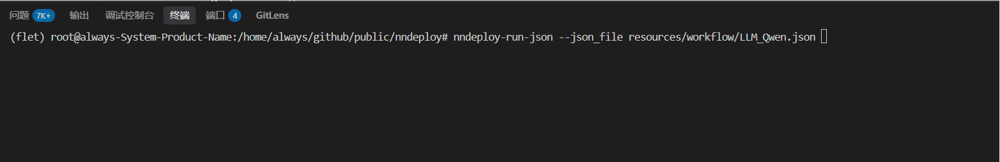

最佳实践¶
nndeploy提供了从算法到生产环境部署的完整解决方案。
推荐流程¶
1. 开发自定义节点¶
Python节点开发：快速实现算法逻辑
C++节点开发：高性能计算节点，适用于性能敏感场景
2. 使用可视化界面设计和调试工作流¶
拖拽式搭建：通过可视化界面拖拽节点，连接数据流
参数实时调试：在界面中实时调整节点参数，观察处理效果
工作流验证：通过测试数据验证工作流的正确性和性能表现
多种执行模式：配置串行、流水线并行、任务并行等执行策略
3. 导出JSON配置文件并通过API加载运行¶
工作流导出：将调试完成的工作流保存为JSON配置文件
跨平台部署：JSON文件可在Linux、Windows、macOS、Android等平台加载运行
API集成：通过Python/C++ API将工作流集成到业务系统中
工程师的协作¶
在端侧部署场景中，nndeploy提供了一套完整的协同开发流程，让算法工程师、推理部署工程师和应用工程师能够高效协作
算法工程师 - Python节点封装¶
目标：将算法逻辑封装为nndeploy的Python自定义节点
具体步骤：
模块化设计：拆分为预处理、推理、后处理节点
创建Python节点：参考模板代码
可视化调试：
nndeploy-app --port 8000 --plugin you_plugin.py
Web界面拖拽节点，调试参数
输出：Python代码、工作流JSON配置、测试数据
推理部署工程师 - 工程化实现¶
目标：基于Python节点进行C++工程化，优化性能并适配多端部署
具体步骤：
理解Python实现：分析Python节点的算法逻辑、数据流和参数配置，识别性能瓶颈和优化点
C++节点重新实现算法逻辑
可视化调试：
nndeploy-app --port 8000 --plugin you_plugin.so
Web界面拖拽节点，调试参数
输出：算法SDK、工作流JSON配置
应用工程师 - 在应用中集成AI能力¶
目标：调用统一的SDK接口和工作流配置，在应用中集成AI能力
具体步骤：
SDK集成：将nndeploy SDK集成到应用项目中
工作流加载：通过JSON文件加载AI算法工作流
数据对接：处理应用数据与AI算法的输入输出格式转换
业务逻辑：基于AI结果实现具体的产品功能
协同开发的优势¶
职责清晰：每个角色专注自己擅长的领域，提高开发效率
代码复用：Python节点为C++实现提供清晰的参考，减少理解成本
快速迭代：算法更新时，只需修改对应节点，不影响整体架构
标准化交付：统一的SDK接口和JSON配置，降低集成难度
可视化调试：工作流界面支持参数调试和效果预览，提升开发体验
通过这套流程，nndeploy实现了从算法研发到产品落地的全流程协同，大幅提升AI部署的效率和质量。
部署阶段¶
在可视化界面中完成工作流搭建后，可保存为 JSON 文件，然后通过 Python/C++ API 加载执行。
自定义输入输出模式¶
使用场景：与业务代码交互
Python大语言模型示例：
import nndeploy
# 创建并加载工作流
graph = nndeploy.dag.Graph("")
graph.remove_in_out_node() # 移除输入输出节点以实现自定义数据流
graph.load_file("path/to/llm_workflow.json")
graph.init()
# 设置输入数据
input_edge = graph.get_input(0)
text = nndeploy.tokenizer.TokenizerText()
text.texts_ = ["<|im_start|>user\n请介绍NBA超级巨星迈克尔·乔丹<|im_end|>\n<|im_start|>assistant\n"]
input_edge.set(text)
# 执行推理
status = graph.run()
# 获取输出结果
output_edge = graph.get_output(0)
result = output_edge.get_graph_output()
# 清理资源
graph.deinit()
C++大语言模型示例：
#include "nndeploy/dag/graph.h"
// 创建并加载工作流
std::shared_ptr<dag::Graph> graph = std::make_shared<dag::Graph>("");
base::Status status = graph->loadFile("path/to/llm_workflow.json");
graph->removeInOutNode(); // 移除输入输出节点
status = graph->init();
// 设置输入数据
dag::Edge* input = graph->getInput(0);
tokenizer::TokenizerText* text = new tokenizer::TokenizerText();
text->texts_ = {
"<|im_start|>user\n请介绍NBA超级巨星迈克尔·乔丹<|im_end|>\n<|im_start|>assistant\n"
};
input->set(text, false);
// 执行推理
status = graph->run();
// 获取输出结果
dag::Edge* output = graph->getOutput(0);
tokenizer::TokenizerText* result = output->getGraphOutput<tokenizer::TokenizerText>();
// 清理资源
status = graph->deinit();
完整工作流模式¶
使用场景：工作流包含完整的输入输出处理逻辑，无需额外的数据设置
Python示例：
import nndeploy
# 加载并执行完整工作流
graph = nndeploy.dag.Graph("")
graph.load_file("path/to/llm_workflow.json")
graph.init()
status = graph.run() # 工作流内部处理所有输入输出
graph.deinit()
C++示例：
// 加载并执行完整工作流
std::shared_ptr<dag::Graph> graph = std::make_shared<dag::Graph>("");
base::Status status = graph->loadFile("path/to/llm_workflow.json");
status = graph->init();
status = graph->run(); // 工作流内部处理所有输入输出
status = graph->deinit();
更多示例代码¶
| 算法类型 | Python示例 | C++示例 |
|---|---|---|
| 大语言模型 | Python LLM | C++ LLM |
| 目标检测 | Python Detection | C++ Detection |
调试工作流¶
完成工作流搭建后，保存为 JSON 文件并通过命令行执行，用于调试工作流
# Python CLI
nndeploy-run-json --json_file path/to/workflow.json
# C++ CLI
cd path/to/nndeploy
./build/nndeploy_demo_run_json --json_file path/to/workflow.json
